Best Digital Marketing Agency in Bhuvanagiri: How to Choose the Right One
digital marketing agency in Bhuvanagiri — practical guidance for local business owners.
Read article →Practical, naturally written digital marketing guides for local and growing businesses.
digital marketing agency in Bhuvanagiri — practical guidance for local business owners.
Read article →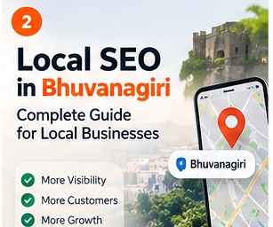
Commercial + Informationallocal SEO Bhuvanagiri — practical guidance for local business owners.
Read article →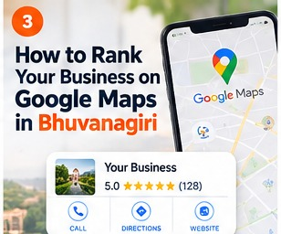
InformationalGoogle Maps ranking Bhuvanagiri — practical guidance for local business owners.
Read article →SEO services in Bhuvanagiri — practical guidance for local business owners.
Read article →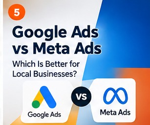
ComparisonGoogle Ads vs Meta Ads — practical guidance for local business owners.
Read article →digital marketing cost in Bhuvanagiri — practical guidance for local business owners.
Read article →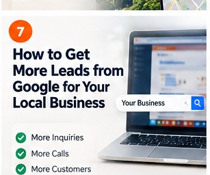
Informationalget leads from Google — practical guidance for local business owners.
Read article →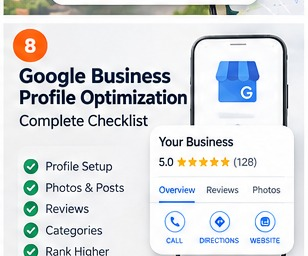
InformationalGoogle Business Profile optimization — practical guidance for local business owners.
Read article →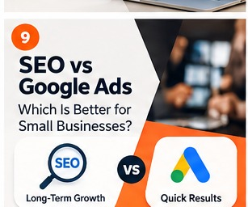
ComparisonSEO vs Google Ads — practical guidance for local business owners.
Read article →how long does SEO take — practical guidance for local business owners.
Read article →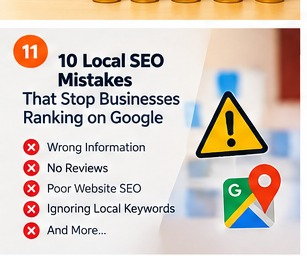
Informationallocal SEO mistakes — practical guidance for local business owners.
Read article →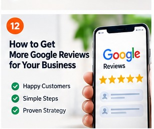
Informationalhow to get Google reviews — practical guidance for local business owners.
Read article →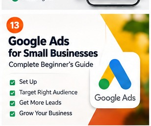
InformationalGoogle Ads for small business — practical guidance for local business owners.
Read article →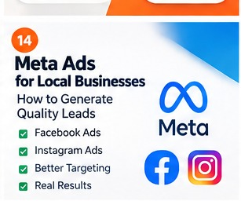
InformationalMeta Ads for local business — practical guidance for local business owners.
Read article →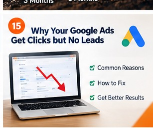
ProblemGoogle Ads clicks but no conversions — practical guidance for local business owners.
Read article →Facebook Ads junk leads — practical guidance for local business owners.
Read article →small business SEO checklist — practical guidance for local business owners.
Read article →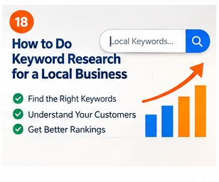
Informationallocal keyword research — practical guidance for local business owners.
Read article →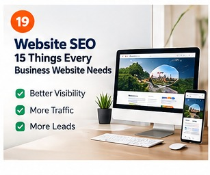
Informationalwebsite SEO — practical guidance for local business owners.
Read article →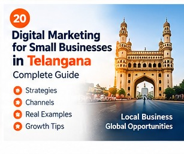
Broad/localdigital marketing for small businesses in Telangana — practical guidance for local business owners.
Read article →